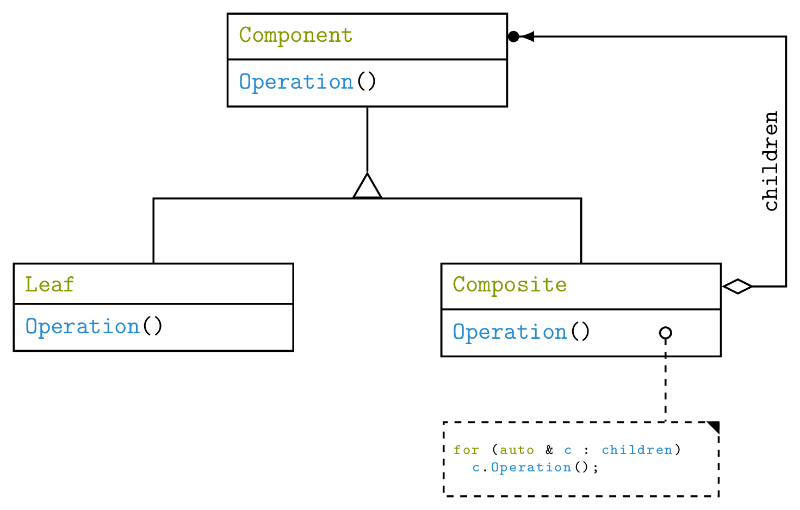
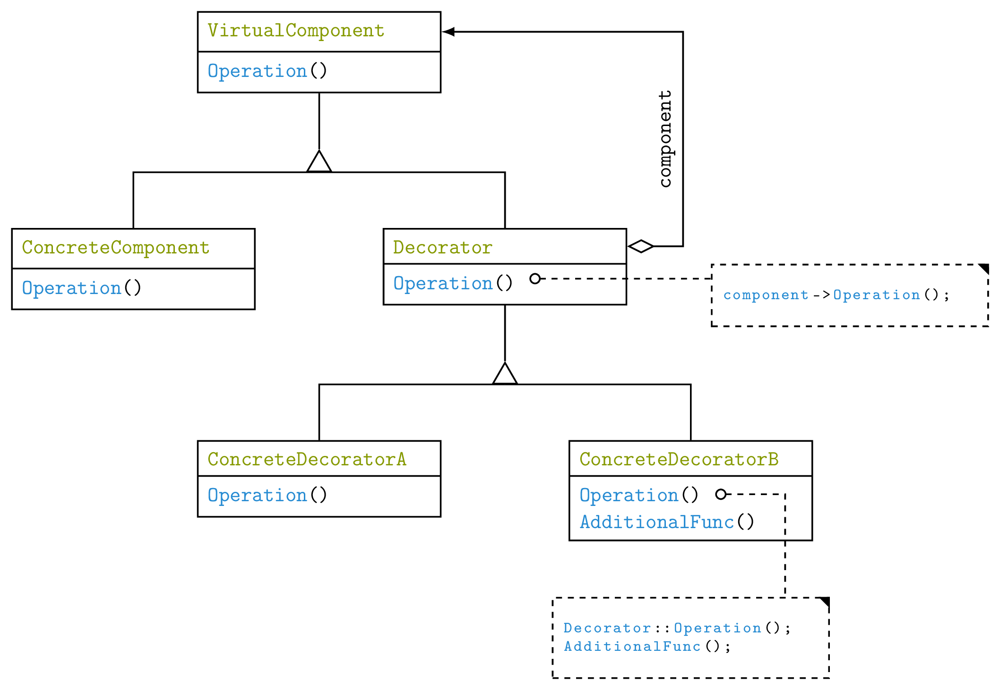

Exercises Day 4
Problem 1: Template classes
Take the Vector class you created in the previous exercise
and make it into a template class so that you can store other objects in it.
Problem 2: Memory management objects
As manual memory management is tricky and dangerous we want to create classes that does this for
us. The trick is to put the delete statement inside of the
destructor of the class. This will ensure that the resource is always deleted when all the pointers
to it doesn't exist any more.
-
Create a class
UniquePointerthat is a template class of the pointer type and contains a single pointer to an object of that type - Create suitable constructor and destructors for that class
- Overload the dereference and dereference+access (
->) operators - Disable any form for copying of the object, but implement the move constructor so that you can move a resource from one pointer to another
-
Create a class
SharedPointerthat is similar toUniquePointer. The difference is thatSharedPointercan be copied, and when it is copied it keeps a count of how many instances of the class "owns" the same resource. Write the destructor so that it only frees the resource when all the pointers have gone out of scope - Create a
.useCount()function so that you can test if the class works as expecte
Problem 3: Design patterns - composite
The composite pattern is used for when you want to create tree structures where any branch can of course continue to branch as many times as it wants to. The fundamental class diagram for the composite pattern is:

We will use this pattern to create a TextObject that can either
be text or a bullet list (or whatever we want to expand it to). The bullet list itself can of
course contain more bullet lists.
-
Create a virtual class
TextObjectthat has a pure virtual.print(std::ostream&)function. Overload the stream operator to call this function -
Create the leaf class first, e.g. a simple
StringObjectthat contains a string, and prints this when theprint()function is called -
Now create the composite
BulletListobject. For storage you can either use theLinkedListclass you defined orstd::list. To have polymorphism work, you need to store pointers toTextObjects in it. YourUniquePointerwould be perfect for this, but it is still missing some of the functionality to have polymorphism work. You can usestd::unique_ptrfrom the memory header header instead, for which polymorphism work as expected. Make the list print a bullet point for every element as well as call the elements own print function -
Optional: also implement an
Enumerateclass that print numbered lists
Problem 4: Design patterns - decorator
The second pattern we will deal with is the decorator pattern, also known as a wrapper. The decorator pattern is for when you want to add functionality to an object dynamically at runtime, and offer similar advantages to subclassing. The fundamental class diagram for the decorator pattern is:
In this exercise we will use this pattern to implement text decoration of strings, such as adding delimiters and colours.
-
Once more create a
TextObjectclass that this time has a pure virtual.str()function that returns a string. Also create aStringObjectclass that inherit fromTextObjectand stores its own string -
Create the baseline for the decorator pattern by declaring a
TextDecoratorclass that owns a pointer to aTextObjectinstance. Once more you may make use of thestd::unique_ptrclass to do this -
Create a
DelimiterDecoratorclass that inherits fromTextDecoratorand adds its own delimiters to the string from its parent. E.g."Hello"to"{Hello}" -
Optional: Create a
ColourDecoratorthat makes use of the ANSI escape codes to colour text - Play around with the classes and see how the order of execution changes the output